Getting Started
Getting Started
Initial Setup - Software installation guide.
Guidance, troubleshooting and tips for every ami.OLE tool, from importing an alignment to sheeting cross sections. Pick a topic on the left, search above, or start with the short videos below.
 AlignmentsIntro to Alignment Tools
AlignmentsIntro to Alignment Tools PlaceholdersIntro to Placeholder Tools
PlaceholdersIntro to Placeholder Tools StructuresAdd masts, portals, TTC's, drop-tubes and more.
StructuresAdd masts, portals, TTC's, drop-tubes and more. CantileversAdd cantilevers to structures
CantileversAdd cantilevers to structures BracketsAdd brackets to structures
BracketsAdd brackets to structures ConfigurationAutomate the creation of multiple OLE structures
ConfigurationAutomate the creation of multiple OLE structures Contact WireAdd contact wires to the model
Contact WireAdd contact wires to the model DocumentationCreate cross section
DocumentationCreate cross section Modelling a TTC structureUse a combination of the ami.OLE tools to create a complete structure
Modelling a TTC structureUse a combination of the ami.OLE tools to create a complete structureEvery button opens its tutorial.
Initial Setup - Software installation guide.
This tutorial will guide you through the installation process.
This tutorial will guide you through the installation process.


Every ami.OLE tool on the Revit ribbon. Click a button to open its tutorial.
| Panel | Button | What it does |
|---|---|---|
| General | General information about ami.OLE plug-in | |
| General | Configure ami.OLE settings: design standard and project overrides | |
| General | Manage ami.OLE content library (access Revit families, Excel spreadsheets, Dynamo Tools, etc.) | |
| General | Contact ami.OLE team for support | |
| Alignment | Track and chainage settings, and the alignments in the model: import, rename, reimport, update placeholders, chainage markers, show or delete | |
| Placeholders | Add single placeholder element along alignment | |
| Placeholders | Add multiple placeholder elements along alignment | |
| Placeholders | Add secondary placeholders along alignment that follow primary placeholder arrangement | |
| Placeholders | Relocate placeholder elements along alignment | |
| Placeholders | Align secondary placeholders along alignment that follow primary placeholder arrangement | |
| Placeholders | Create placeholders at overlap | |
| Placeholders | Create placeholders by mast location | |
| Placeholders | Query/ Edit placeholder elements data in table format | |
| Structures | Add new Structure element based on alignment & placeholder location | |
| Structures | Edit selected Structure element (modify parameter values, geometry, type, location, etc.) | |
| Structures | Add default mast instance(s) from list of XYZ coordinates | |
| Cantilevers | Add new Cantilever element at selected Placeholder location | |
| Brackets | Add new Bracket element at selected Structure | |
| Brackets | Edit selected Bracket element (modify parameter values, height, type, etc.) | |
| Anchors | Add new anchor element at selected Structure and Placeholder | |
| Utility | Add OLE Configuration and propagate from parent to children placeholders | |
| Wires | Add Ancillary wires between brackets | |
| Wires | Place generic Cantenary contact wires between Placeholder elements | |
| Wires | Edit selected Contact wire (modify wire type, No of droppers, modify dropper arrangement, etc.) | |
| Wires | Export Wire Run data to Excel | |
| Wires | Import Wire Run data from Excel | |
| In-Span | Add cut-in insulator within catenary system at a specific location. | |
| In-Span | Add section insulator within catenary system at a specific location. | |
| In-Span | Add jumper within catenary system at a specific location. | |
| In-Span | Add isolator arm jumper within catenary system at a specific location. | |
| Annotation | Create model and annotation element(s) to denote span-versine for single or multiple spans between placeholders. | |
| Annotation | Create annotation element(s) to denote structure and wire attributes | |
| Cross Sections | Create cross-section view from selected placeholder element(s) | |
| Cross Sections | Create multiple cross-section views from selected placeholder elements | |
| Sheets | Create dependent plan views (layouts) & place on sheets from overall layout plan | |
| Sheets | Create drawing sheets from selected cross-section views in Project Browser | |
| Reports | Check the selected wire runs against the design standard's limits and write an Excel compliance report. |
TaskFind information about this application.

Visit Website: Link direct to the ami.OLE website.
Contact Us: Send AMI an email. (For support use the 'Contact Support' button to create a ticket).
Release Notes: Links to the ami.OLE version history.
Learn: Links to the ami.OLE tutorials.
Choose the design standard for the project and change the values this project needs.
TaskCustomise settings for specific regions or standards.
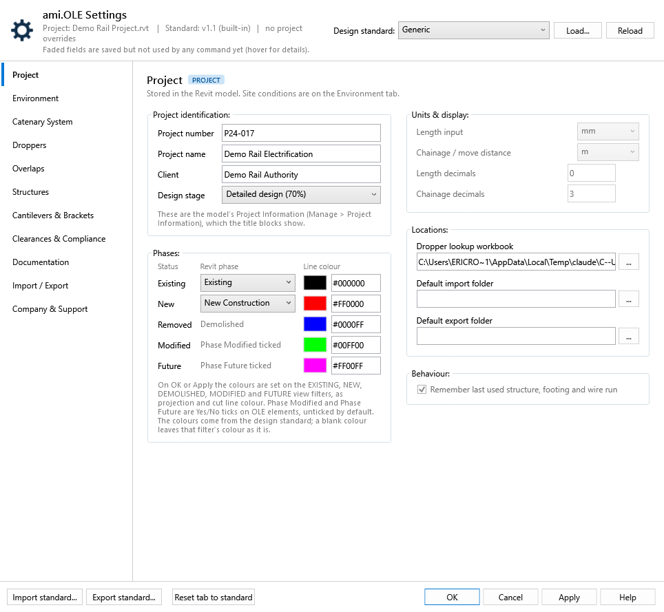
The Settings Guide explains every tab and field, with its default.
TaskManage content.


TaskSubmit an IT Request Form to AMI support team.

.csv file (Manage Alignments › Import CSV…).This tutorial is for a Civil 3D workflow. The tutorial will guide you through the necessary steps of creating a quick 2D alignment for the purpose of importing into the Revit project.
This tutorial is for a Civil 3D workflow. The tutorial will guide you through the necessary steps of creating a quick 2D alignment for the purpose of importing into the Revit project.
Important note:\ These alignment tutorials are guides only. They demonstrate how to create a basic 2D alignment purely for the purpose of importing into a Revit project. These alignments are not intended to be accurate or final—they serve as a temporary placeholder to keep the project moving while awaiting the final alignment design. For detailed guidance on creating precise and survey-accurate alignments, please refer to the Autodesk Help website or consult with a track engineer.
About 2D Alignments:
The 2D alignment represents the horizontal layout of a linear feature in a plan view. It defines the path or centerline of the design without taking into account any elevation or vertical components. The alignment defines the track layout or rail centerline. This tutorial focus's on three optional workflows (items 1 to 3) and how to export alignment data (items 4 & 5):
In order to create an alignment 3D polylines must be converted to 2D polylines.
In order to create an alignment 3D polylines must be converted to 2D polylines.
Important note:\ These alignment tutorials are guides only. They demonstrate how to create a basic 2D alignment purely for the purpose of importing into a Revit project. These alignments are not intended to be accurate or final—they serve as a temporary placeholder to keep the project moving while awaiting the final alignment design. For detailed guidance on creating precise and survey-accurate alignments, please refer to the Autodesk Help website or consult with a track engineer.
Converting 3D polylines into 2D polylines.
Open an existing cad file containing the 3D polyline in Civil 3D.

Check if the polyline is a 3D polyline by hovering over the polyline.

3D Polyline

2D Polyline
If the polyline is a 2D polyline then skip the next steps and go to 'Converting 2D polylines into 2D alignments'.
Go to the 'Modify tab and click on the 'Design' dropdown list.

From the list, select 'Convert 3D to 2D Polylines'

In the model space select a 3D polyline and click 'Enter' to commit. The 3D polyline is now converted to a 2D polyline. Repeat the procedure for converting more 3D polylines to 2D polylines.

Next steps: Converting 2D polylines into 2D alignments.
Important note:\ These alignment tutorials are guides only. They demonstrate how to create a basic 2D alignment purely for the purpose of importing into a Revit project. These alignments are not intended to be accurate or final—they serve as a temporary placeholder to keep the project moving while awaiting the final alignment design. For detailed guidance on creating precise and survey-accurate alignments, please refer to the Autodesk Help website or consult with a track engineer.
Converting 2D polylines into 2D alignments.
To add a starting station (chainage) to the alignment it is important to check and set the 'Station Delimiter Position'. Click on the (1)C3D icon (top left corner) > (2)'Drawing Utilities' > (3)'Drawing Settings'.

On the 'Drawing Settings' window go to the (1)'Ambient Setting' tab and set the (2)'Station Delimiter Position' to 1+000. Click 'Apply' and close the window.

Go to the 'Home' tab and select the 'Alignment' dropdown.

Select 'Create Alignment from Objects'.

In the model space select a 2D polyline and then click 'Enter' on your keyboard.

Click 'Enter' to accept alignment direction, or click 'Reverse' to flip alignment direction.

The 'Create Alignment from Objects' window opens. Edit the inputs or use default settings. For the purpose of this tutorial we will use the default inputs and later show how to edit.

Click 'OK' to commit. The alignment is created.

To edit the alignment go to 'TOOLSPACE' > 'Alignments' and right click on an alignment from the list.

Select 'Properties'.

The 'Alignment Properties' window opens. Go to the 'Information' tab. Here you can edit the name of the alignment.

Go to the 'Station Control' tab. Here you can edit the starting station.

Example with starting station updated. Click 'Apply' to commit and close the window.

All alignment stations will be updated.

Repeat the procedure for converting more polylines to alignments.
Next steps: Create rail lines and export to CSV or learn how to Draw a spline and covert to polyline.
Important note:\ These alignment tutorials are guides only. They demonstrate how to create a basic 2D alignment purely for the purpose of importing into a Revit project. These alignments are not intended to be accurate or final—they serve as a temporary placeholder to keep the project moving while awaiting the final alignment design. For detailed guidance on creating precise and survey-accurate alignments, please refer to the Autodesk Help website or consult with a track engineer.
Add a 2D alignment to an existing alignment.
In this tutorial we will create an alignment by drawing a spline and converting it to a 2D polyline. Open an existing alignment project. Go to 'Home' tab > 'Draw' panel and click the dropdown menu.

Click the 'Spline' tool and draw a spline in the model space.

Convert the spline into a 2D polyline. In the 'Command' line type PEDIT. Select the spline and follow the prompts, or just hit 'Enter' on your keyboard until polyline is created.

Next steps: Converting 2D polylines into 2D alignments.
The following tutorials are essential for setting up alignment files for the purpose of importing into the Revit project.
The following tutorials are essential for setting up alignment files for the purpose of importing into the Revit project.
About Civil 3D (C3D), Revit and ami.OLE:
Alignments can be created directly in Civil 3D or imported from third-party software via LandXML. If creating your own alignments, refer to the Autodesk Civil 3D Help for guidance on best practices and tools available. Visit: https://help.autodesk.com.
Once the alignment is in Civil 3D, set the appropriate coordinate system to ensure accurate geolocation. The rail alignment can then be exported to a standardised CSV format, which is consumed by ami.OLE to generate Revit-based OLE geometry with consistent and reliable alignment data. Additionally, exporting the alignment to a DWG file allows Revit to acquire the correct coordinate system, ensuring geospatial coordination across the project.
The following tutorials are suitable for Civil 3D 2022 and later versions.
.csv file. This file is then consumed by ami.OLE, which uses it to automatically generate Revit-based OLE alignments with consistent and accurate geometry.Import LandXML
In this tutorial we will import a LandXML file. Go to the 'Insert' tab and click (1) 'LandXML'.

The 'Import LandXML' window opens. (1) Select the file to import. (2) Click 'Open'.

The 'Import LandXML' window opens. (1) Click 'Open'.

The alignments will appear in the model space.

Next steps: Set coordinate system
Set coordinate system
In this tutorial we will set the coordinate system. At the command prompt, type ADESETCRDSYS.

The 'Assign Global Coordinate System' window opens. (1) Click 'Select Coordinate System'.

The 'Coordinate System Library' window opens.

To filter the list, (1) Search for region, input town, city or country. (2) Select appropriate coordinate system. (3) Click 'Select' to confirm.

The 'Assign Global Coordinate System' window is now set with the coordinate system. (1) Click 'OK' to commit. The coordinate system is now set.

Next steps: Create rail lines and export to CSV to use in Revit.
Creating rail lines & exporting to CSV is critical for the creation of alignments in Revit.
Creating rail lines & exporting to CSV is critical for the creation of alignments in Revit.
Create rail lines and export to CSV.
Go to the (1)'Rail' tab > 'Rail Lines' panel and click on the (2)'Create' tool. Select the alignment (3).

The 'Rail Lines; window opens. Select 'Left rail' and 'Right rail' only, as shown below. (1)Select the 'Feature line' radio button. (2)Input the 'Distance between rails'. (3)Click 'OK' button to commit.

Go to the 'Rail' tab and click the (1)'Export' button. (2)Select the left or right rail line of the alignment to be exported.

The 'Select CSV File' window opens. (1)Rename the file and (2)click 'Save".

Repeat this procedure to create and export other alignments.
Next steps: Import an alignment into Revit.
Export alignments as AutoCAD DWG, useful for acquiring coordinates in Revit and/or use as a visual background reference in Revit.
Export alignments as AutoCAD DWG, useful for acquiring coordinates in Revit and/or use as a visual background reference in Revit.
After creating rail lines the alignments can be exported as a AutoCAD DWG file.
Go to the (1)'Output' tab and click on the (2)'Export Civil 3D Drawing' button.

The 'Export Autodesk Civil 3D Drawing' window opens. (1)Click on 'Export Settings' refer to next screenshot for instructions. (2)Input the 'Destination folder'. (3)Click 'Export' button to commit.

Export Settings window. Set inputs as shown below (1)Click 'OK' button to commit.

Back to 'Export Autodesk Civil 3D Drawing' window. (3)Click 'Export' button to commit.

The 'Export Status' window opens. When export is complete, click 'OK' to close window.

Next steps: Import a CAD DWG into Revit.
Import AutoCAD DWG files into Revit and use as a visual reference or to acquire coordinates.
Import AutoCAD DWG files into Revit and use as a visual reference or to acquire coordinates.
About importing data into Revit:
This tutorial provides a brief introduction to the key requirements for using the ami.OLE tools effectively.
For more information on importing files into Revit, visit: https://help.autodesk.com
Import or link CAD files into the Revit model and use as a visual reference.
Import or link CAD files into the Revit model and use as a visual reference.
Procedure:
Import AutoCAD DWG file.
In Revit with the project open, go to the 'Insert' tab and click (1)'Link CAD'.

The 'Link CAD Formats' window opens. Navigate to the CAD file to import and select the file. Set (1)'Positioning' to 'Auto - Center to Center'. (2) Click 'Open' to commit.

The CAD file is imported, if it is not visible, right mouse click in an active view and click (1)'Zoom To Fit'.

The linked CAD DWG will be visible.

Next steps: Acquire Coordinates from imported AutoCAD DWG.
If grid coordinates haven't been set for the survey or project base point, you can link a DWG file and use its geolocation to define shared coordinates. This workflow assumes the survey or project base point is either not set or differs from the geolocation in the DWG file.
Procedure:
Go to 'Manage' tab and click 'Coordinates' button. From the dropdown click (1)'Acquire Coordinates'. (2)Select the linked CAD model.

The 'Acquire Coordinates Succeed' window will open. Click (1)'Close' to close the window.

The linked CAD model can be delete from the Revit model or keep as a visual reference.
Next steps: Import alignments.
Import an alignment from a .csv file, from the Manage Alignments window.
TaskImport an alignment from a .csv file.
.csv alignment file. The file is recorded as the alignment's source, so Reimport can read it again later.


See Manage Alignments for renaming, reimporting, updating placeholders and deleting alignments.
Issue:
Alignment has an extra vertical section or sections. This must be resolved before placing placeholder structures, as it will cause inaccuracies when adding placeholder structures.
If the issue looks similar to the below image then there is a solution to fix this:

Why this happened:
This issue is generally caused if the original alignment was created in 3rd party software and imported into C3D via LandXML.
Solution:
Edit the associated alignment .csv file.
Procedure:
Open the associated import alignment .csv file. Identify the issue by checking the 'Z' values of the first few rows. In this case the 'Z' value starts at 0.000m and the next row jumps to 51.007m.

The problem here is with the first row 'Z' value.

Delete the problem row or rows. In this case we will just delete the first row. Save the .csv file.

Import the updated .csv file and the issue should be resolved.

Place chainage markers along an alignment, from the Manage Alignments window.
TaskAdd chainage markers to the alignment.
km+m gives Ch.14+300, m gives Ch.14300), the primary interval (50 m by default), the secondary interval (10 m) and whether markers are pinned. Click Apply if you change them.3D view:

Layout view:

TaskAdd a single placeholder to the model.

Input Placeholder Details
After selecting the alignment, the ‘Add Single OLE Placeholder’ interface will open.
The name of the selected alignment is displayed in the bottom left corner of the interface.
Input options:


Task: Add multiple placeholders to the model.

Input options:


TaskAdd secondary placeholders to another alignment. Use this tool to align multiple placeholders across different tracks.

Input options:


TaskRelocate single or multiple placeholders along the alignment or update placeholder locations based on updated alignment geometry.


Input options:
0 to update placeholder locations based on updated alignment geometry.

TaskAlign secondary placeholder to primary placeholder.


Turn the placeholders of the two overlap structures into overlap placeholder pairs, in one step.
TaskCreate the overlap placeholders at structure 1 and structure 2 of an overlap.
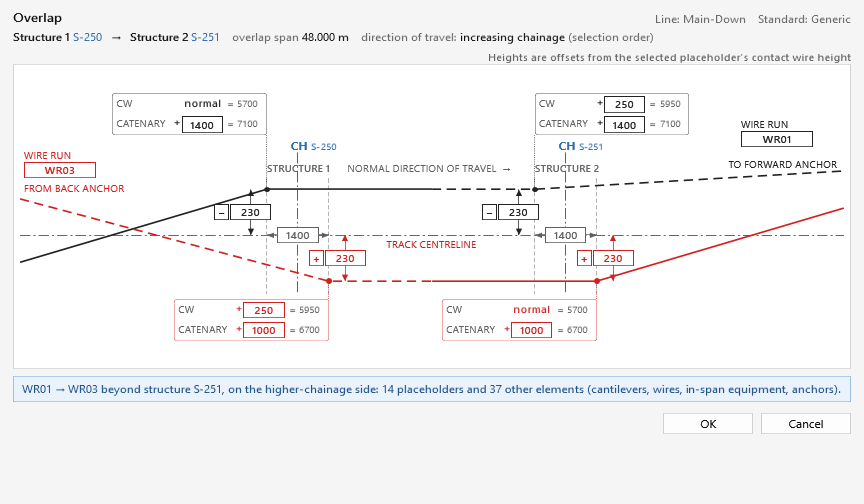
Use this tool to add a placeholder to a mast not yet associated to any placeholder.
Use this tool to add a placeholder to a mast not yet associated to any placeholder.
TaskAdd and associate a placeholder with a mast.

Select alignment to place placeholders on.


TaskTable-based global view for editing design data of all placeholder elements in the model.


TaskAdd a structure to the model.
TaskAdd a mast to the model.


Input options:


Masts can be rotated around their central axis by tapping the spacebar on your keyboard.


TaskAdd a portal to the model.


TaskAdd a drop tube to the model.
TaskAdd a drop tube to the model.


TaskAdd a drop tube to the model.
Select Arrangement
Go to the 'Arrangement' cell and flip toggle to Ceiling. Go to the 'Type' cell and flip toggle to Face-Based.


TaskAdd a TTC to the model.


Input options:

TTC's can be rotated around their central axis by tapping the spacebar on your keyboard.
TaskAdd a wall mounted structure to the model.
TaskAdd a wall mounted structure to the model.


Input options:


TaskAdd a wall mounted structure to the model.


Input options:


TaskEdit structure allocation, geometry and location.


Note: Changing the structure type can dis-associate the brackets from the structure. To re-associate brackets to the structure see 'Re-associate to Structure'.
Use this tool to place single or multiple masts at specified xyz coordinates.
Use this tool to place single or multiple masts at specified xyz coordinates.
TaskAdd structures to the model by importing Easting, Northing & Elevation coordinates.


To update mast rotation perpendicular to track alignment, refer to the 'Add By Mast Location' tool.
TaskAdd a cantilever to the model.


TaskAdd a bracket to a structure.
TaskAdd a bracket to a mast.


Adding ancillary brackets
Go to the ‘Brackets’ panel and click the ‘Add’ button. The ‘Add Bracket’ user interface will open. Select the 'Bracket Type' dropdown and tick Ancillary to see all brackets available within that type category. When 'Ancillary' type is ticked, two input cells are visible, 'Ancillary Type' & 'Ancillary Wire'.

Ancillary Type: Refers to Family Type. The Family Type and the 'Ancillary Type' input need to match. New Types can be added by navigating to Project Browser, expand Families category 'Specialty Equipment' (1) right clicking on the Family name 'AMI_OLE_Ancillary Wire'. (2) Select 'New Type' and (3) rename the new type.


The new type will now be available for selection in the 'Ancillary Type' dropdown menu.
Ancillary Wire: Refers to the ancillary wire identification. This is a project specific input.

Inputting this data now streamlines the 'Add Ancillary' wire workflow.
TaskAdd a bracket to a TTC or Portal.


TaskEdit a bracket type, height and size.


Changing the structure type causes the associated brackets to lose their connection. The brackets can be re-associated with the structure using the following standard Revit workflow.
Changing the structure type causes the associated brackets to lose their connection. The brackets can be re-associated with the structure using the following standard Revit workflow.

TaskRe-associate brackets to the associated structure. This task only needs to be performed if a structure type is changed after brackets have been added to the structure.


TaskAdd an anchor to a mast. The task requires two steps:


Currently there is not an 'Edit Anchor' tool available.
Work-around:
TaskDuplicate OLE structures to other locations. (Note: Only Masts, Cantilevers and Brackets can be duplicated with this tool)


Duplication Result
The structure elements are duplicated.

TaskAdd wire to ancillary brackets.


The dropper lookup workbook is now loaded on the Droppers tab of Settings.
TaskLoad the default dropper data into the project.
.xlsx). Its tables appear on the tab, and the file path is saved on the Project tab as the Dropper lookup workbook, so Reload can read it again after it changes.See the Droppers tab in the Settings Guide for every option.
TaskAdd contact wires.

TaskAdd contact wires, Cantenary or Contenary.


TaskAdd contact wires, Uninsulated or Insulated Overlap.


TaskAdd contact wires, In Running or Out Of Running.


TaskEdit contact wires.


TaskExport dropper schedule to MS Excel.


TaskImport dropper schedule from MS Excel document. Refer to Export dropper schedule for complete workflow.


TaskAdd an in-span element to the model.


The jumper is flipped to other side of dropper.

TaskAdd span and versine to a 2D layout/plan view.
Note: Span and Versine annotation is only visable plan views.


TaskAdd structure boxes to a 2D layout/plan view.
Note: Annotation is only visible in plan views.


TaskCreate an OLE cross section.


TaskCreate multiple OLE cross sections.


TaskCreate multiple dependent layout views and sheets.


TaskCreate OLE cross section drawing sheet/s.


Check wire runs against the design standard's limits and write an Excel compliance report.
TaskCheck the selected wire runs against the design standard and report the results in Excel.
What it checks: contact wire height, stagger (the curve limit where an adjacent span is curved), span length and adjacent span ratio, gradient and change of gradient, track versine, the shortest dropper and the dropper count of each span, and mast offset to track. The limits come from the Catenary System and Clearances & Compliance tabs in Settings.

Every field in the Settings window, its default under the built-in Generic standard (the ami.OLE defaults, not based on any railway authority), and what it changes when you work in Revit. Fields marked Not used yet are saved but no command reads them yet; they appear faded in the window.
The drop-down at the top fills every tab with that standard's values. Built in: Generic (the ami.OLE defaults), PTA (WA), TfNSW, Queensland Rail, Metro Trains Melbourne, Network Rail UK Master Series and Network Rail UK Series 1; company standards are .json files in the standards folder. A project that hasn’t chosen one opens with your last choice, or Generic; a model already modelled with ami.OLE before it saved a standard opens with PTA (WA), the values ami.OLE used then. OK or Apply saves the choice in the project.
Edit any field. Only the values you change from the standard are kept, and the header counts them: “3 project overrides”.
The settings are saved inside the Revit model. This is an undoable step called Save ami.OLE Settings. In a workshared model, synchronise so others get them.
The next time you open a command window (Add Structures, Add Placeholders, Export Wire Data…) it uses the standard plus your changes.
| Control | What it does |
|---|---|
| Design standard | Chooses the standard for this project. Its name is saved in the model, so everyone on the project uses the same one. |
| Load… | Opens a standard .json file from anywhere and selects it. |
| Reload | Re-reads the standards folder after a new or updated file has been added. |
| Header line | Shows the standard's version, where it came from (built-in or the file name) and how many project overrides there are. |
| Import standard… | Same as Load… |
| Export standard… | Saves every value currently shown as a new standard file. The quickest way to start a standard for another authority. |
| Reset tab to standard | Puts the current tab back to the standard's values. |
| OK / Apply | Save to the model (OK also closes). Cancel closes without saving. Help is not connected yet. |
Project information, the three phases and their colours, units and file locations. Site conditions are on the Environment tab.

| Setting | Default | What happens in Revit | Status |
|---|---|---|---|
| Project identification | |||
| Project number, Project name, Client, Design stage | from the model | These are the model's Project Information (Manage > Project Information: Project Number, Project Name, Client Name, Project Status), which the title blocks show. The tab opens with the values in the model, and OK / Apply writes them back. A value changed in Revit since the last save wins. | Used |
| Phases | |||
| Existing – Revit phase | Existing | The phase mapped to the Phase Existing annotation flag. The list shows the model's phases; a saved phase the model doesn't have stays in the list, so it isn't lost. | Used |
| New – Revit phase | New Construction | The phase ami.OLE treats as new work when it sets the phase annotation flags on elements, and the phase given to the original placeholder when Overlap creates overlap placeholders. | Used |
| Removed | — | Revit has no separate phase for removed work: it is existing work demolished in the new phase (Revit's Demolished status), flagged Phase Modified. | Display |
| Modified | — | An existing element that is altered but kept. Tick its Phase Modified parameter (Yes/No, under Other in Properties; ami.OLE adds it to the OLE model categories on OK / Apply, unticked). Cross-section annotations follow it too. | Display |
| Future | — | Future work. A Revit view never shows elements of a later phase, so model future work in the current phase and tick its Phase Future parameter (Yes/No, added and unticked like Phase Modified). Cross-section annotations follow it too. | Display |
| Line colour: Existing, New, Removed, Modified, Future | #000000 · #FF0000 · #0000FF · #00FF00 · #FF00FF | From the design standard (Generic: black, red, blue, green, magenta). Revit's own phase graphic overrides (Manage > Phases > Graphic Overrides) can't be set from an add-in, so on OK / Apply ami.OLE uses the view filters EXISTING, NEW, DEMOLISHED, MODIFIED and FUTURE: it creates any that are missing, keeps their rules on the two phases chosen above, and sets the colour as projection and cut line colour in every view and view template that uses them. If none does, they are added to the cross-section view template from the Documentation tab. Click the swatch to pick a colour or type #RRGGBB; a different colour is a project override, kept when the window is reopened. Reload, or choosing a design standard, puts the standard's colours back. A blank colour leaves that filter's colour as it is. | Used |
| Tags | — | A tag takes the phase colour of the element it tags, as a per-view override (tags have no phase, so the filters can't catch them). Set on OK / Apply for every view that uses the phase filters, and when Cross Section, Multi Cross Section, Annotate Layout or Span / Versine places tags. After changing an element's phase or tick, press Apply to bring its tags up to date. | Used |
| Units, locations and behaviour | |||
| Length input, Chainage / move distance, decimals | mm · m · 0 · 3 | Dialogs still use mm for lengths and m for chainage. | Not used yet |
| Dropper lookup workbook | blank | The workbook Reload on the Droppers tab reads. Loading a workbook on the Droppers tab fills this in. Place Contact Wire also uses it if the model has no dropper data yet. | Used |
| Default import folder | blank | The file dialogs of Import Alignment, Add Mast by Coordinates and Import Wire Data open in this folder. | Used |
| Default export folder | blank | The save dialog of Export Wire Data opens in this folder. | Used |
| Remember last used structure, footing and wire run | on | Dialogs still pick the first item in each list. | Not used yet |
The site conditions the OLE is designed for, from the project's design basis. The defaults come from the selected design standard, and every built-in standard uses its capital city: the tab says which, under Design code. Change any value for the project's site; a changed value is a project override, saved in the Revit model, and Reset tab to standard puts the standard's values back.
| Standard | Defaults for | Ambient (record low / high) | Reference | Wind | Ultimate / service |
|---|---|---|---|---|---|
| Generic | Perth | −5 to 50 °C (−1.3 / 46.7) | 20 °C | A1 · TC2 | 45 / 37 m/s |
| PTA (WA) - Standard | Perth | −5 to 50 °C (−1.3 / 46.7) | 20 °C | A1 · TC2 | 45 / 37 m/s |
| TfNSW - Sydney Trains 1500 V DC | Sydney | 0 to 50 °C (2.1 / 45.8) | 25 °C | A2 · TC2 | 45 / 37 m/s |
| Queensland Rail - 25 kV AC | Brisbane | 0 to 45 °C (2.6 / 43.2) | 20 °C | B1 · TC2 | 57 / 39 m/s |
| Metro Trains Melbourne - 1500 V DC | Melbourne | −5 to 50 °C (−2.8 / 46.4) | 20 °C | A5 · TC2 | 45 / 37 m/s |
| Network Rail - UK Master Series, UK Series 1 | London | −20 to 45 °C (−17.4 / 40.2) | 10 °C | Country | vb 22 m/s / not set |
All standards: conductor 80 °C, importance level 2 (CC2 in the UK), 50 years, C3. London's 40.2 °C record (July 2022) is above the −18 to +40 °C operating limits the ORR gives for Series 1 and UK Master Series equipment; check this against the design range. Each standard's notes give the stations, dates and sources.
On OK / Apply each value is written to a text parameter on the model's Project Information (names start with OLE, e.g. OLE Wind Region), with its unit, so title blocks and schedules can show them. The parameters are added the first time a condition is set. The compliance report lists the conditions under Design conditions. Before saving, ami.OLE checks the values: numbers only, minimum ambient below maximum, reference temperature within the ambient range, conductor maximum not below ambient maximum, service wind speed not above ultimate (AS/NZS only: under Eurocode the basic wind velocity is a 10 min mean, so the two are not compared). If something looks wrong it lists the problems and asks whether to save anyway.
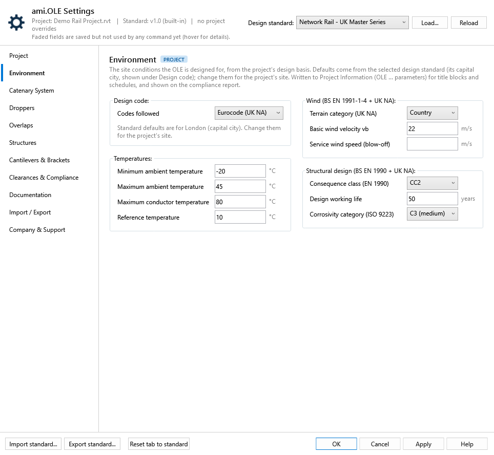
| Setting | Default | What happens in Revit | Status |
|---|---|---|---|
| Design code | AS/NZS | The codes the conditions follow: AS/NZS (Australia, New Zealand), Eurocode (UK NA) (UK: BS EN 1991-1-4 and BS EN 1990 with the UK National Annexes) or Eurocode (other countries, with their own National Annex). It sets the group headers, the labels and the lists below; a choice the new code doesn't offer is cleared, and a standard's value from another code is ignored. A standard sets it in environment.designCode; the four built-in standards use AS/NZS. Written to Project Information as OLE Design Code. | Used |
| Minimum / maximum ambient temperature | per standard (Generic: −5 · 50 °C) | Written to Project Information as OLE Ambient Temperature Min / Max and listed under Design conditions on the compliance report Summary. Later: tension-length and tensioner travel checks. | Used |
| Maximum conductor temperature | 80 °C | Written to Project Information as OLE Conductor Temperature Max and listed under Design conditions on the compliance report Summary. Later: sag and contact wire height checks at the hottest conductor. | Used |
| Reference temperature | per standard (Generic: 20 °C) | The temperature the balance weights are set at. Written to Project Information as OLE Reference Temperature and listed under Design conditions on the compliance report Summary. | Used |
| Importance level (AS/NZS) or consequence class (Eurocode), design working life, corrosivity (AS 4312 / ISO 9223) | 2 · 50 years · C3 | Written to Project Information as OLE Importance Level, OLE Design Life, OLE Corrosivity Category and listed under Design conditions on the compliance report Summary. Later: structure and protective coating checks. | Used |
| Wind region or zone, terrain category | per standard (Generic: A1 · TC2) | No wind region under Eurocode (UK NA). Written to Project Information as OLE Wind Region, OLE Terrain Category and listed under Design conditions on the compliance report Summary. | Used |
| Ultimate wind speed (AS/NZS) or basic wind velocity vb (Eurocode), service wind speed (blow-off) | per standard (Generic: 45 · 37 m/s) | Written to Project Information as OLE Wind Speed Ultimate / Service and listed under Design conditions on the compliance report Summary. Later: structure loads (ultimate) and contact wire blow-off checks (service). | Used |
Not a Settings tab: it opens from Manage Alignments, the only button on the ribbon's Alignment panel (the Import and Chainage Marker buttons are now in this window). The track and chainage settings are saved on OK / Apply like Settings; their defaults come from the design standard chosen in Settings. The alignment buttons change the model straight away.

| Setting | Default | What happens in Revit | Status |
|---|---|---|---|
| Track gauge | 1067 (Narrow) | Information only. Placeholders follow the two rails of the imported alignment, so the gauge comes from the alignment itself. | Info only |
| High rail level datum | Project Base Point | The level the placeholders' High Rail Level is measured from: Project Base Point, Survey Point (shared elevation) or Internal Origin. Placeholders added from now on use it. When you change it and press OK / Apply, the High Rail Level of every placeholder already in the model is re-expressed from the new datum; nothing moves. T.O.F. in Add Structures is entered against the same datum. A model never saved with this setting was measured from the survey point, so its first save with Project Base Point converts its values. | Used |
| Chainage format | km+m | Chainage Markers writes the marker text in this format: km+m gives Ch.14+300, m gives Ch.14300. Applies to markers placed from now on. | Used |
| Primary marker interval | 50 m | Chainage Markers places a primary marker every 50 m along the alignment. | Used |
| Secondary marker interval | 10 m | Secondary markers between the primary ones, and the step the first marker is rounded to. | Used |
| Pin chainage markers | on | Markers are pinned after placement so they can't be moved by accident. | Used |
{Line}-{Track}, used to split and build alignment names), the Up / Down track keywords (Annotate Layout picks the Up Main / Down Main / CrossOver tag from them) and the alignment CSV layout (1 header row, comma, columns 0 · 1-3 · 9-11 · 12-14). They keep the values saved in the project, or these defaults.Laid out like the Droppers tab: a status card at the top (green with alignments; amber with none, or when placeholders are off their alignment; grey with no project open) with Import CSV…, and below the Track and Chainage groups a table of every alignment in the model, with its line name, start and end chainage (in the Chainage format), length, the placeholders on it (with how many are off the alignment, e.g. after a reimport), its chainage markers and the CSV it came from. Double-click a row to rename it. These buttons change the model straight away (Revit can undo each one), not on OK or Apply.
| Button | What happens in Revit |
|---|---|
| Import CSV… (status card) | Replaces the old Import ribbon button: pick a CSV, confirm line and track, import. The file is recorded as the alignment's source. |
| Rename… | Change the line and track. The alignment and every element carrying its line name are renamed in one undoable step. View and sheet names are not changed. |
| Reimport | Reads the source CSV again and replaces the alignment's geometry, keeping its name. Asks first. If the source isn't recorded or the file has gone, it asks for the file. Placeholders and structures stay where they are. |
| Reimport from… | As Reimport, from a CSV you pick (e.g. a new design revision). |
| List of off placeholders | Selecting an alignment with placeholders off shows them under the table, in chainage order: structure number, chainage, primary or secondary (and of which line), how far off (mm), why (off the centreline, not at its chainage, or chainage beyond the alignment), and the structures on it, marked pinned when they will stay. An alignment with placeholders off is selected first when the window opens. |
| Update placeholders | For the selected alignment, when Placeholders shows some off: moves them back onto it, each to its own chainage, after asking. It is Relocate with a distance of 0, so the structures, brackets and cantilevers move with their placeholder, a pinned structure stays and its placeholder moves to it, and secondary placeholders are realigned to their primary (also when the primary is on another line). One undoable step. Off means more than 10 mm from the centreline, or for a primary placeholder more than 10 mm from the point at its chainage (a changed start chainage). It takes about 3 s per placeholder (the Relocate move), so a whole line of 48 takes 2–3 minutes; Revit is busy until it finishes. Tested on OLE Template Revit 2022 (rolled back): with one alignment shifted 0.5 m sideways, all 48 of its placeholders showed as off; updated placeholders moved 500 mm back onto it (0 mm off) and the mast on one of them (Mast 300, unpinned) moved 500 mm with it. |
| Chainage markers tick (each row) | Shows or hides that alignment's chainage markers in every plan, section, elevation and 3D view (Revit's Hide in View > Elements), as one undoable step. Ticked = shown in at least one view. Next to it, the number of markers; none greys the tick out. A marker belongs to the alignment whose centreline it sits on (within 0.5 m). |
| Chainage markers (button) | Replaces the old Chainage Marker ribbon button. Places chainage markers along the selected alignment with the saved Chainage settings (Apply first if you have just changed them). |
| Show in view | Closes the window (without saving changed track or chainage settings), selects the alignment and zooms to it. |
| Delete… | Deletes the alignment after asking. Placeholders and structures on it are kept. |

Main-Down.csv. Bottom: Rename… on that alignment. The track list offers the Up / Down keywords; any other track can be typed.Wire heights and stagger for new placeholders, wire limits, tension lengths, spans and placeholder spacing. Overlap settings are on the Overlaps tab.
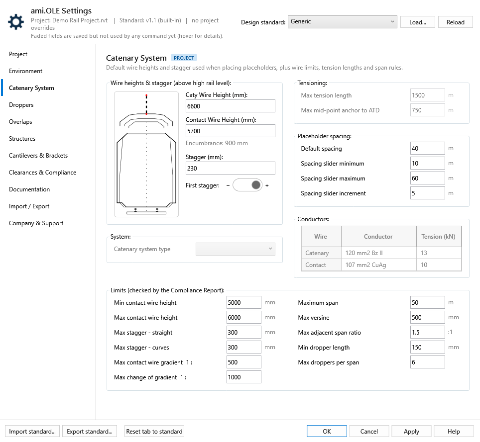
| Setting | Default | What happens in Revit | Status |
|---|---|---|---|
| Wire heights & stagger | |||
| Caty wire height | 6600 mm | Pre-filled in Add Placeholders by Range, Single and Secondary. Add Placeholders Based on Mast places with it directly. | Used |
| Contact wire height | 5700 mm | Same commands as the caty height. | Used |
| Encumbrance | 900 mm | Calculated: caty height minus contact wire height. | Display |
| Stagger | 230 mm | Pre-filled as +230 in By Range and Secondary, and as −230 in Single (as before). Based on Mast places with it directly. | Used |
| First stagger − / + | + | By Range and Secondary: the sign of the first placeholder's stagger. Later ones alternate. | Used |
| System | |||
| Catenary system type | blank | Recorded with the standard. | Not used yet |
| Tensioning | |||
| The tensioning of each wire run (auto-tensioned, semi-auto or fixed) is not a setting: it comes from the anchor families placed at its ends, e.g. a BALANCE WEIGHT ARRANGEMENT anchor is auto-tensioned. | |||
| Max tension length | 1500 m | Longest run between terminations. For tension diagram and per-wire-run checks. | Not used yet |
| Max mid-point anchor to ATD | 750 m | Longest distance from the mid-point anchor to an auto-tensioning device, which sets the along-track wire movement. | Not used yet |
| Placeholder spacing | |||
| Default spacing | 40 m | The starting step in Add Placeholders by Range. | Used |
| Spacing slider min / max / increment | 10 · 60 · 5 m | The range and snap step of the spacing slider in Add Placeholders by Range. | Used |
| Conductors | |||
| Conductors | 120 mm² Bz II · 13 kN 107 mm² CuAg · 10 kN | Catenary and contact wire conductor and tension. The two rows are always there, so a standard without conductors can be filled in; a row left blank is not saved. Generic values are AMI engineering defaults for a 25 kV auto-tensioned simple catenary. For future tension diagrams, anchor loads and sag calculations. | Not used yet |
| Limits (checked by the Compliance Report) | |||
| The Generic limits are AMI OLE engineering defaults for a 25 kV simple catenary, not any authority’s figures: nominal 5700 mm contact wire height −700 / +300 mm; nominal ±230 mm stagger + 70 mm tolerance; max span 50 m, adjacent spans within 1.5 : 1 (1.25 for higher speeds); max versine 500 mm, so with 230 mm stagger to the outside of the curve the mid-span wire is at most 270 mm off the track centre; gradient 1:500 with change of gradient at half of it (EN 50119), for line speeds up to 130 km/h; 150 mm minimum dropper length; 1500 m max tension length and 750 m max from the mid-point anchor to each ATD. Replace them with the values of the project’s design standard. The Lookup window shows span, versine, stagger and contact wire height cells outside these limits in red, with the reason as a tooltip; a span is also red when it breaks the adjacent span ratio with the span before it. It doesn’t stop OK. | |||
| Min / max contact wire height | 5000 · 6000 mm | Compliance Report checks the contact wire height at every support (anchors skipped). Left empty, the check is skipped and shown as “Not checked”. | Used |
| Max stagger – straight / curves | 300 · 300 mm | Compliance Report checks |stagger|; the curve limit applies when an adjacent span has a versine. | Used |
| Max contact wire gradient, max change of gradient (1 : n) | 1:500 · 1:1000 | Compliance Report checks the gradient of each span, and the change from one span to the next. | Used |
| Max span, max adjacent span ratio | 50 m · 1.5 : 1 | Compliance Report checks each span length and the ratio of adjacent spans. Left empty, not checked. | Used |
| Max versine | 500 mm | Compliance Report checks the track versine of each span (the span’s AMI Versine, as tagged by Annotate Span/Versine). It limits span length on curves: versine ≈ L² / 8R, so 500 mm allows about 49 m at R = 600 m. | Used |
| Min dropper length | 150 mm | Compliance Report checks the shortest dropper of each span. The Droppers tab marks shorter droppers red in its drawing and table. In the sample Dropper Lookup workbook only the longest catenary spans are shorter: 70 m on sheet 1 (129 mm), 64 m and 65 m on sheet 2 (144 and 119 mm). | Used |
| Max droppers per span | 6 | Compliance Report checks the dropper count of each span; the Droppers tab flags table rows with more. | Used |
The dropper lookup tables stored in the model, which Place Contact Wire reads: view, edit and check them span by span, set the encumbrance each table was calculated for, and export the workbook. This replaces the old Load Dropper Data ribbon button.
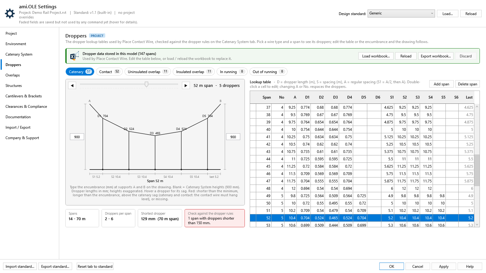
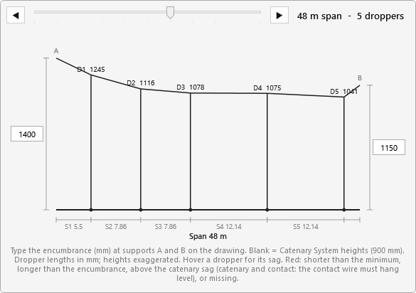
| Control | What it shows or does | What happens in Revit |
|---|---|---|
| Layout | ||
| Window | Opening this tab widens the Settings window to the right to 1600 px (within your screen), from the same left edge and at the same height as the other tabs, so only the table scrolls. The drawing and summary are on the left and the table on the right at the same height. In a narrower window the table goes under the drawing. | — |
| Dropper data in the model | ||
| Status card | Green: data stored in this model. Blue: a workbook loaded or the table edited, not saved yet. Amber: the model has no dropper data. Grey: no project open. | Read only. |
| Load workbook… | Pick the dropper lookup workbook (.xlsx). Its tables show straight away, and the path goes to the Project tab. | Replaces the model's dropper data on OK or Apply. Cancel keeps the old data. |
| Reload | Reads the project's workbook again, e.g. after editing it in Excel. Asks first if you have edited the table. | Same as Load workbook. |
| Export workbook… | Saves the tables shown, your edits included, as a dropper lookup workbook. The project's workbook is the template, so its titles, formatting and drawings are kept; catenary and contact rows get the spacing formulas (S1 = A/2, S2.. = A). The project then points at the exported file. | Nothing in the model changes. |
| Discard | Forgets a loaded workbook or your edits and shows the model's data again. | Nothing is written. |
| Drawing | ||
| Wire type chips | Catenary, Contact, Uninsulated / Insulated overlap, In / Out of running, with the number of spans in each table. | Read only. |
| Span slider, ◀ ▶ | Step through the spans of the selected table. The drawing shows supports A and B, the catenary through the dropper tops, the contact wire, droppers D1…Dn with their lengths in mm, and the spacings S1…Sn and the last gap, to scale along the span. Hover a dropper for its length, distance from support A and sag below the supports. | Read only. |
| Encumbrance at A and B | Type the catenary height above the contact wire at each support in the boxes on the drawing (mm). Each wire type keeps its own pair. A blank box uses the Catenary System heights and shows that value under it, e.g. “(900)”. Default: 900 / 900 for catenary and contact, 1400 / 1150 for both overlaps; in / out of running not set. | Saved with the project's settings (a project override of the standard). Used by the drawing and the checks. |
| Checks | ||
| Summary tiles | Span range, droppers per span, the shortest dropper, and the result of the checks on the selected table. | Read only. |
| Rules checked | Droppers shorter than the minimum or more droppers than the maximum (both set on the Catenary System tab), droppers longer than the encumbrance where they hang, and on catenary and contact spans a dropper above the catenary sag — the catenary can only sag between the supports, so a dropper higher than the line between its neighbours means the contact wire can’t hang level (hover it for the longest length that keeps it level), missing lengths or spacings, spacings longer than the span, a span length listed twice, and missing spans between the shortest and longest at the Place Contact Wire rounding step (1 m; 5 m for in / out of running). Problems are red in the drawing; in the table the cell is filled red (solid red on the selected row) and the red dot’s tooltip lists the problems of that span. | Place Contact Wire can't place a span the table doesn't have. |
| Lookup table (editable) | ||
| Columns and order | Span (m), No. of droppers, A (regular spacing, m), dropper lengths D1–D6 (m), spacings S1–S6 (m) and the last gap, as in the workbook. Every table is shown shortest span first; an edited span moves to its place. | Edited or exported tables are written shortest span first. Place Contact Wire matches the span exactly, so the order doesn’t change what it places. |
| Editing a cell | Double-click to edit. In catenary and contact rows A = span ÷ No. and S1 = A/2, S2… = A, so changing the span, No. or A respaces the row (lengths are kept). Lowering No. clears the extra droppers. Text, negatives and more than 6 droppers are refused. | Written to the model on OK or Apply. |
| Add span / Delete span | Add span inserts the nearest span length the table is missing, a copy of the selected span, in table order. Delete span removes the selected one. | Written to the model on OK or Apply. |
Defaults for the Overlap tool, which offsets the two placeholders of each overlap structure and sets their stagger and wire heights. Everything is typed on one plan of the overlap: the two wire runs, the track centreline and the placeholders. The structure itself isn't drawn, because it can be on either side of the track. The Overlap tool opens on this same plan with these values (see Overlap tool below).
![Overlaps tab: plan of an overlap with the track centreline, the black run from the back anchor and the red run to the forward anchor, dashed where out of running from mid-span to the anchor; a + or − button in front of each stagger box (black +, red −); at each of two structures a CH main chainage line between two placeholders 1400 mm apart, 230 mm staggers, and cards with contact wire and catenary offsets and the resulting heights (250 = 5950, 1000 = 6700, 1400 = 7100); overlap type and span lengths on the left, curve and termination staggers on the right](img/settings/overlaps.png)
| Setting | Default | What happens in Revit | Status |
|---|---|---|---|
| On the plan | |||
| Red is the run from the back anchor: out of running at structure 1, in running at structure 2 and beyond. Black is the run to the forward anchor: in running up to structure 1, out of running at structure 2. Each run crosses the track once. A wire is dashed where it is out of running (clear of the pantograph): always from its anchor to the middle of the overlap span. The blue CH line is the structure's main chainage, midway between its two placeholders. The boxed values are saved with the design standard (a project override when changed here). | |||
| Placeholder spacing | 1400 mm | Along-track distance between the two placeholders of an overlap structure, centred on CH; typed on the plan at either structure. Overlap replaces the selected placeholder with two placeholders at half of it either side (700 mm). Saved with the design standard as cantileverSpacing; older standards with spacingEachSide_m still load. | Used |
| In-running stagger | 230 mm | From the track centreline, for the wire in running at each structure (black at structure 1, red at structure 2). Saved as stagger. | Used |
| Out-of-running stagger | 230 mm | From the track centreline, on the other side, for the wire out of running at each structure (red at structure 1, black at structure 2). The two wires run parallel through the overlap span. Saved as outOfRunningStagger. | Used |
| Stagger side + / − | black − · red + | The small + / − button in front of each stagger box is the default side of each run: black's sign at both structures, red on the other side. Click any of them to swap the two runs. Overlap opens with these sides; its own +/− buttons swap them for one overlap. Saved as backRunStaggerPositive; a standard that leaves it out takes the First stagger sign on the Catenary System tab. | Used |
| Contact wire lift (out of running) | +250 · +250 mm | Added to the normal contact wire height at the placeholder where the run is out of running (red at structure 1, black at structure 2): 5700 + 250 = 5950. Where the run is in running the contact wire stays at normal height. In Overlap, “normal” is the contact wire height of the placeholder you select. | Used |
| Catenary – red run / black run | +1000 · +1400 mm | Added to the normal contact wire height, typed separately at each structure: 6700 for red, 7100 for black. Each run keeps its own catenary height at both structures. | Used |
| Resulting heights | — | The grey value beside each offset: the Contact wire height on the Catenary System tab plus the offset. It updates as you type, and when the Catenary System height changes. | Display |
| Arrangement & overlap span | |||
| Default overlap type | Uninsulated | Uninsulated, insulated or insulated (jumpered). When Overlap finds a contact wire already modelled in the overlap span, it replaces it with two overlap wires of this type: uninsulated uses the uninsulated overlap dropper lookup, both insulated types the insulated one. Saved as type. | Used |
| Span length – normal / min / max | 48 · 42 · 48 m | Length of the overlap span, structure 1 to structure 2. Overlap shows a warning, and keeps OK greyed out, when the span between the selected placeholders is below the minimum or above the maximum. A limit left empty is not checked. The normal length is for reference only. | Used |
| Level contact wire in the overlap span | On | No pre-sag in the overlap span; the adjacent spans are pre-sagged. | Not used yet |
| Stagger on curves and at terminations | |||
| In-running stagger – curve, max | 350 mm | With stagger = versine in the overlap span ticked, the in-running stagger on curves follows the versine, up to this value. | Not used yet |
| Stagger at structure before termination – normal / max | 230 · 350 mm | Stagger of each run at the structure before it turns off to its anchor. | Not used yet |
Ribbon Overlap: select the placeholder of structure 1, then of structure 2, in the normal direction of travel. The selection order sets the direction, so it works on an up and a down line alike. Press Esc after the first one for a single structure; the window then asks whether it is structure 1 or 2, and which way trains run. The window shows this tab's plan: CH and the contact wire height come from the selected placeholders, and every boxed value starts from the values above and can be changed for this overlap. + / − beside a stagger swaps the sides of the two runs; the window opens with the Stagger side set above.
The wire run is split. The run on the higher-chainage side of the overlap is the new one: red (it carries on past structure 2) when trains run towards increasing chainage, black when they run the other way. Its box suggests the next wire run not yet used in the model (WR01 → WR02); the other box keeps the current run. On OK, every placeholder, cantilever, contact wire, in-span item and anchor on the current run beyond the overlap, on the higher-chainage side, moves to the new run. The blue line in the window says how many. Then two overlap placeholders are placed at each structure (half the placeholder spacing either side of CH), and the selected placeholders move to the New phase (Project tab), all in one step.
Contact wires already modelled are reconnected in the same step: the span before structure 1 now ends on its black (in-running) placeholder and the span after structure 2 starts on its red (in-running) placeholder, each re-placed so its droppers suit the new span and given the wire run shown in the window. The wire in the overlap span is replaced by two overlap wires (black back to back, red forward to forward) of the Default overlap type above. A wire that can't be placed (no dropper lookup data, or no matching span) is kept and listed in a message. With one structure selected, the overlap span wire is left as it is. The window reports the AMI Structure Number of each selected placeholder.
OK stays greyed out while a warning shows: black and red have the same wire run, the new run is already used, or the span is outside the range above.

The values Add Structures opens with, set on the same screens as Add Structures; plus allowances and input limits.
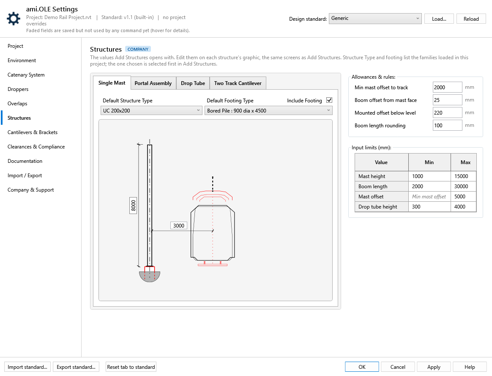
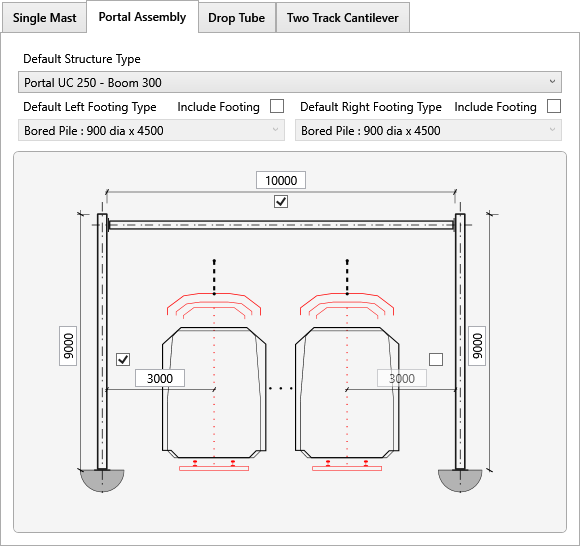
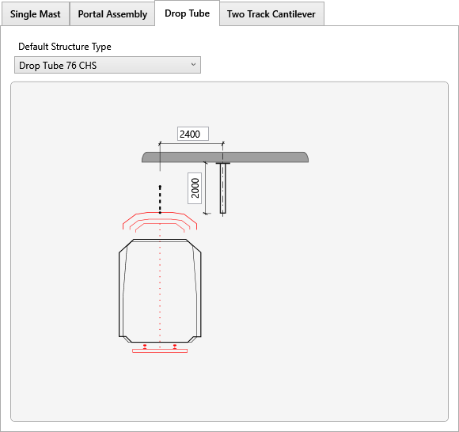
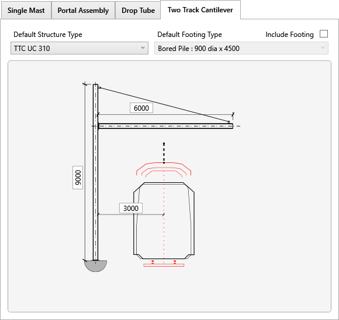
| Setting | Default | What happens in Revit | Status |
|---|---|---|---|
| Defaults, on the Add Structures screens | |||
| Single Mast | first type · 3000 · 8000 · no footing | Add Structures › Single Mast opens with this structure type, mast offset and height, and Include Footing with its footing type. | Used |
| Portal Assembly | first type · 3000 · 3000 · 9000 · 9000 · 10000 | Structure type, left and right mast offset and height, boom length, and left / right Include Footing with their footing types. | Used |
| Drop Tube | first type · 2400 · 2000 | Structure type, drop tube offset and height. | Used |
| Two Track Cantilever | first type · 3000 · 9000 · 6000 | Structure type (single TTC), track offset, mast height, boom length, and Include Footing with its footing type. | Used |
| From the standard only | 350 · 150 · 9000 | T.O.F. below high rail level, footing projection and drop tube ceiling level aren't on the tab; Add Structures uses the standard's values. Mounted structures use the standard's offsets, heights and boom (2400 · 2000 · 10000). | Used |
| Allowances & rules | |||
| Min mast offset to track | 2000 mm | Track centreline to the nearest face of the mast, on straight track; Add Structures measures mast offset the same way. Add Structures won't accept a smaller mast offset (single mast, portal, TTC and mounted offsets), and the compliance report flags masts closer than this. Generic: an AMI default from rolling stock size, the vehicle envelope only: a 3.2 m wide vehicle (1600 mm half width) + 300 mm kinematic allowance + 100 mm clearance. PTA and Metro Trains Melbourne 2000 mm and Network Rail 1800 mm (smaller UK loading gauge) are AMI defaults worked out the same way; TfNSW and Queensland Rail keep the 3000 mm main-line figure from their own standards. Add curve throw on curves, and room for a walkway where one is needed. | Used |
| Boom offset from mast face | 25 mm | Gap between the mast face and the boom end (the bracket plate), used when Add Structures places portal booms and mounted details. Saved as plateThickness in the standard. | Used |
| Mounted offset below level | 220 mm | The mounted mast allowance in the high rail level check, and in bracket validation on mounted single masts. | Used |
| Boom length rounding | 100 mm | Portal and mounted boom lengths are worked out from the placeholder distance and rounded up to this. | Used |
| Input limits | |||
| Mast height, boom length, mast offset, drop tube height | 1000–15000 · 2000–30000 · min mast offset–5000 · 300–4000 | Add Structures rejects values outside these ranges. The mast offset minimum is Min mast offset to track (shown greyed in the table), so Add Structures and the compliance report use one value; 1500 mm applies only if a standard sets no minimum. AMI engineering ranges, not authority figures: short mounted masts to tall portal masts, a two-track cantilever to a multi-track portal boom, mast offset from the track centreline, drop tube length. | Used |
| Stagger, wire height | ±10000 · 0–20000 | Not on this tab: kept as the standard has them. Lookup rejects stagger, contact wire and caty wire heights outside these ranges. | Used |
Default cantilevers and brackets for Add Cantilever.
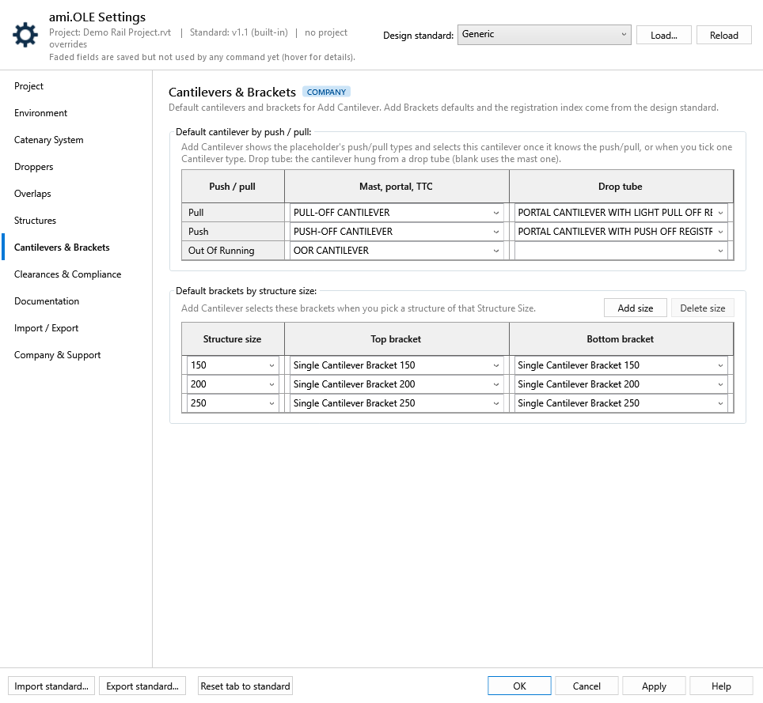
| Setting | Default | What happens in Revit | Status |
|---|---|---|---|
| Default cantilever by push / pull | blank | Add Cantilever: once the push/pull is known (Pull or Push, from the placeholder and structure), the Cantilever type filter shows only that push/pull and this cantilever type is selected. Two columns: Mast, portal, TTC, and Drop tube for the cantilever hung from a drop tube (e.g. a portal cantilever; blank uses the first column). Ticking one Cantilever type yourself (e.g. Out Of Running) selects its default too. Each row lists only the project's cantilever types with that push/pull. | Used |
| Default brackets by structure size | blank | Add Cantilever: when you pick the structure, the top and bottom brackets for its Structure Size (e.g. 300) are selected. Add size offers the first project size not mapped yet. A size with no row gets no default. Change the selection for overlaps (twin brackets) and back-to-back masts. | Used |
Clearance Check, the placeholder families and the Compliance Report.
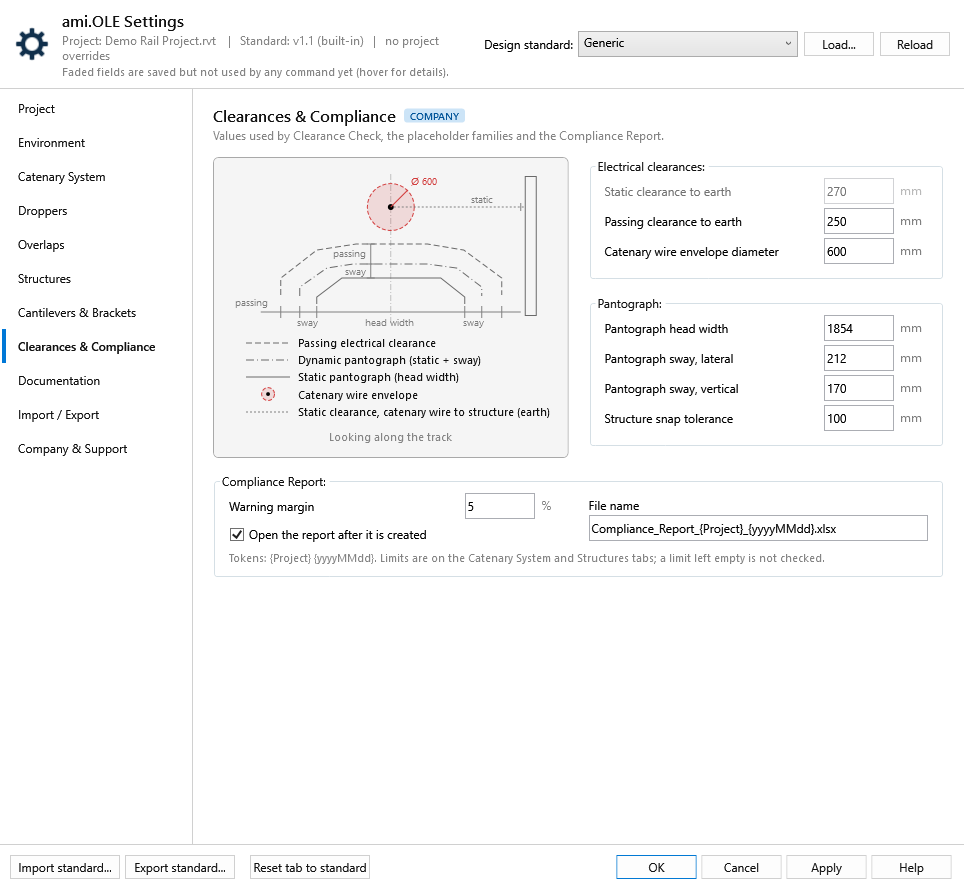
The diagram is a section looking along the track, drawn to scale for the Generic standard's values: head width 1854 mm, sway 212 mm and passing clearance 250 mm. The pantograph gauge is drawn as:
The catenary wire is drawn above the gauge inside its red envelope, at the envelope diameter. The dotted line on the right is the static clearance from the catenary wire to a structure at earth potential.
| Setting | Default | What happens in Revit | Status |
|---|---|---|---|
| Static clearance to earth | 270 mm | Reserved for electrical clearance checks. 270 mm is the EN 50119 value for 25 kV, an AMI default. | Not used yet |
| Passing clearance to earth | 250 mm | Saving the settings writes it to the Passing clearance type parameter of every AMI_OLE_Placeholder type. It applies sideways and upwards. | Used |
| Catenary wire envelope diameter | 600 mm | Clearance Check builds the clearance cylinder around the catenary wire at this diameter. | Used |
| Pantograph head width, sway lateral / vertical | 1854 mm, 212 / 170 mm | Saving the settings writes them to the Head width, Sway lateral and Sway vertical type parameters of every AMI_OLE_Placeholder type. A value left empty is not written. Lateral sway is how far the head moves sideways on each side; vertical sway is how far it moves upwards. | Used |
| Structure snap tolerance | 100 mm | When a placeholder is moved or relocated, structures within this distance of it count as attached and move with it. | Used |
| Compliance Report | |||
| Warning margin | 5 % | Compliance Report marks a value within this margin of a limit as a warning instead of a pass. | Used |
| File name | Compliance_Report_{Project}_{yyyyMMdd}.xlsx | Suggested file name. {Project} and {yyyyMMdd} are filled in. | Used |
| Open the report after it is created | on | Opens the workbook in Excel when the report finishes. | Used |
Cross Section, Dependent Layouts, Drawing Composition, Annotate Layout and Span/Versine.
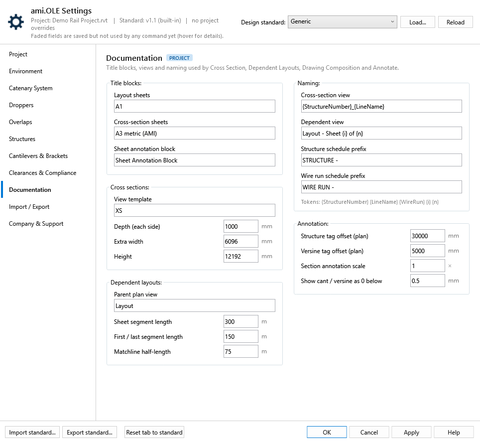
| Setting | Default | What happens in Revit | Status |
|---|---|---|---|
| Title blocks | |||
| Layout sheets | A1 | Dependent Layouts uses the first title block whose family name contains this text. | Used |
| Cross-section sheets | A3 metric (AMI) | Drawing Composition puts cross sections on sheets with this title block. | Used |
| Sheet annotation block | Sheet Annotation Block | The annotation family Drawing Composition places on each sheet. | Used |
| Cross sections | |||
| View template | XS | Applied to every section Cross Section creates. | Used |
| Depth, extra width, height | 1000 · 6096 · 12192 mm | Size of the section box: depth each side of the structure, extra width, and height. | Used |
| Dependent layouts | |||
| Parent plan view | Layout | The engineering plan that Dependent Layouts splits into dependent views. | Used |
| Sheet segment length, first / last segment, matchline half-length | 300 · 150 · 75 m | The length of track on each layout sheet, on the first and last sheets, and the matchline length. | Used |
| Naming | |||
| Cross-section view | {StructureNumber}_{LineName} | Name given to each new section view. | Used |
| Dependent view | Layout - Sheet {i} of {n} | Name given to each dependent layout view. | Used |
| Structure / wire run schedule prefix | STRUCTURE - · WIRE RUN - | Prefixes for the schedules Drawing Composition duplicates for each sheet. | Used |
| Annotation | |||
| Structure tag offset (plan) | 30000 mm | Annotate Layout places structure box tags this far from the structure. | Used |
| Versine tag offset (plan) | 5000 mm | Span / Versine places its tags this far from the alignment. | Used |
| Section annotation scale | 1 | Multiplies every offset of the dimensions and tags ami.OLE adds to cross sections. Use 1.5 to spread them out. | Used |
| Show cant / versine as 0 below | 0.5 mm | Smaller cant or versine values are tagged as 0. | Used |
The dropper schedule workbook: template, file name and wire type descriptions. The schedule's cell layout and the mast coordinate import columns are no longer on this tab; they come from the design standard.
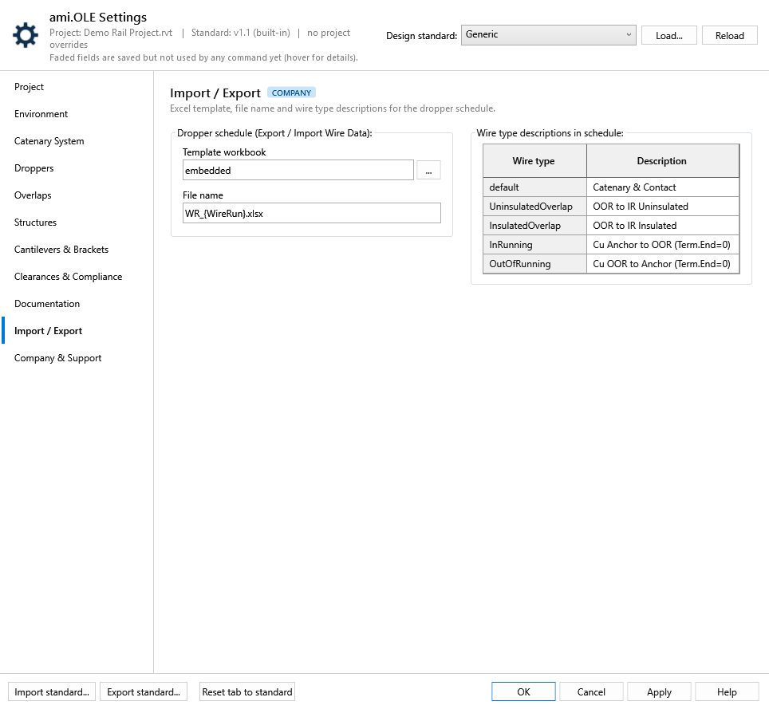
| Setting | Default | What happens in Revit | Status |
|---|---|---|---|
| Dropper schedule | |||
| Template workbook | embedded | Export Wire Data fills the built-in schedule template, or the workbook at the path you enter. | Used |
| File name | WR_{WireRun}.xlsx | Suggested file name in the save dialog. | Used |
| Wire type descriptions | Catenary & Contact … | The description written for each wire type. default covers plain catenary and contact wires. | Used |
Where company standards live, optional features and support contacts.
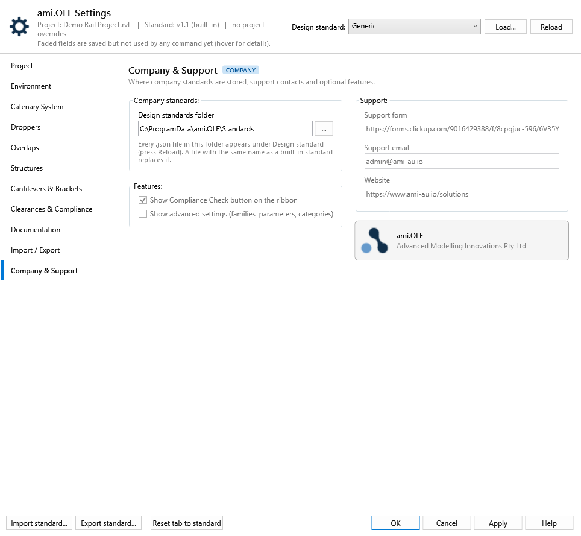
| Setting | Default | What happens in Revit | Status |
|---|---|---|---|
| Design standards folder | %ProgramData%\ami.OLE\Standards | Every .json file here is listed under Design standard. A file with the same name as a built-in standard replaces it. Saved per user. | Used |
| Show Compliance Check button | on | The ribbon is unchanged. | Not used yet |
| Show advanced settings | off | Reserved for family, parameter and category settings. | Not used yet |
| Support form, email, website | ClickUp form · admin@ami-au.io | Contact Support and About still use their built-in links. | Not used yet |
ami.OLE 1.1.45 test build, branch feature/settings-ui. Screenshots show the whole Settings window as it opens: every tab the same height and header, the wider Overlaps, Structures and Droppers tabs extending to the right. Defaults are the values of the built-in Generic standard: the ami.OLE tool defaults, not based on any railway authority. Screenshots are from the current build with the Generic standard and no project overrides, on a sample project (Main-Up / Main-Down with two crossovers); the dropper data is the ami.OLE Dropper Lookup workbook. Updated 23 October 2026.